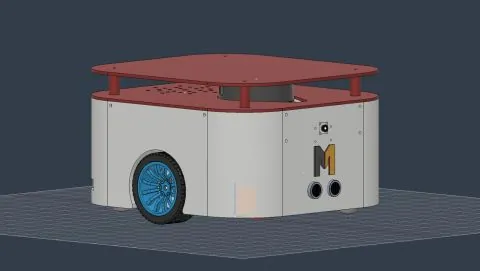
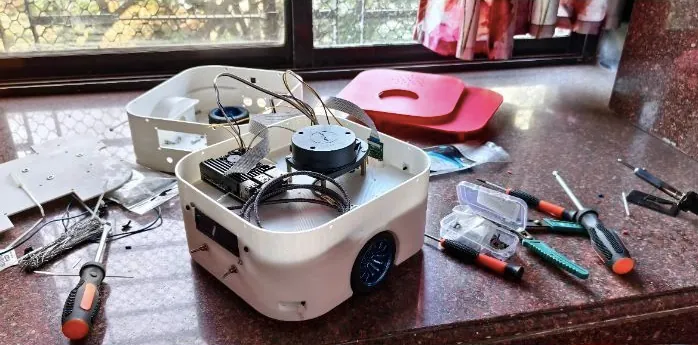
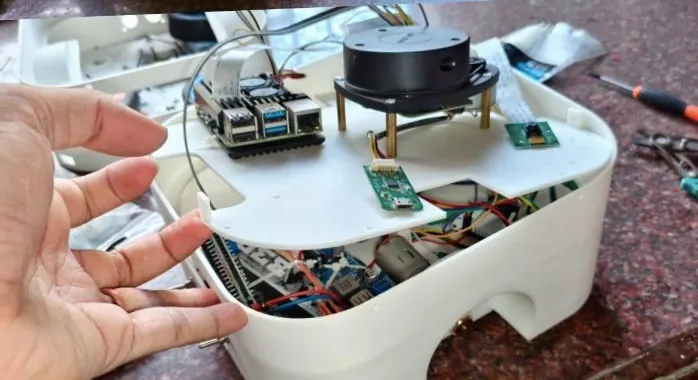

What it does
- Maps a room with slam_toolbox and localises with AMCL.
- Navigates and patrols waypoints with Nav2.
- Watches its battery, cancels navigation when it runs low, and returns to the dock.
- Finds the dock with a camera and a QR marker, and stops on LiDAR about 15 cm away.
- Docks and undocks on real hardware.
How it is built
- Hardware
- Two-wheel differential drive, encoder DC gear motors, L298N driver, Raspberry Pi, ESP32, RPLiDAR, MPU6050 IMU, ultrasonic sensor, camera, 16×2 LCD, 3D-printed chassis designed in Fusion 360.
- Firmware
- ESP32 with a PID loop per wheel and interrupt-driven quadrature encoders.
- ROS 2
- A custom C++ ros2_control hardware interface (real and Gazebo), diff-drive controller, twist_mux, joystick teleoperation.
- Navigation
- Nav2 with the Smac 2D planner, Regulated Pure Pursuit, layered costmaps and a custom behaviour tree; a multi-threaded executor for docking.
- Tooling
- Gazebo worlds including a QR maze built in Blender; Docker packaging.



The hard part
Docking. Nav2 alone gets the robot near the dock but not reliably onto it, so docking runs in stages: Nav2 drives to a pre-dock pose, a proportional controller aligns on the QR marker from the camera, and the LiDAR decides when to stop.
I didn't sit down and "learn SLAM" as a subject one weekend. I learned exactly the SLAM I needed the day my robot couldn't reliably find its way back to its charging dock.From my post on the MechaMind Labs blog
Status and limits
- Docking and undocking work on real hardware and succeed most of the time. I haven't published a measured success rate.
- The battery publisher that triggers return-to-dock is not in the public repository.
Learners who rebuilt it
Naman Arora built the full autonomy stack in simulation; Dipanjan Bakshi and Dhrutidhara Behera built their own physical versions. Their posts are on the home page.